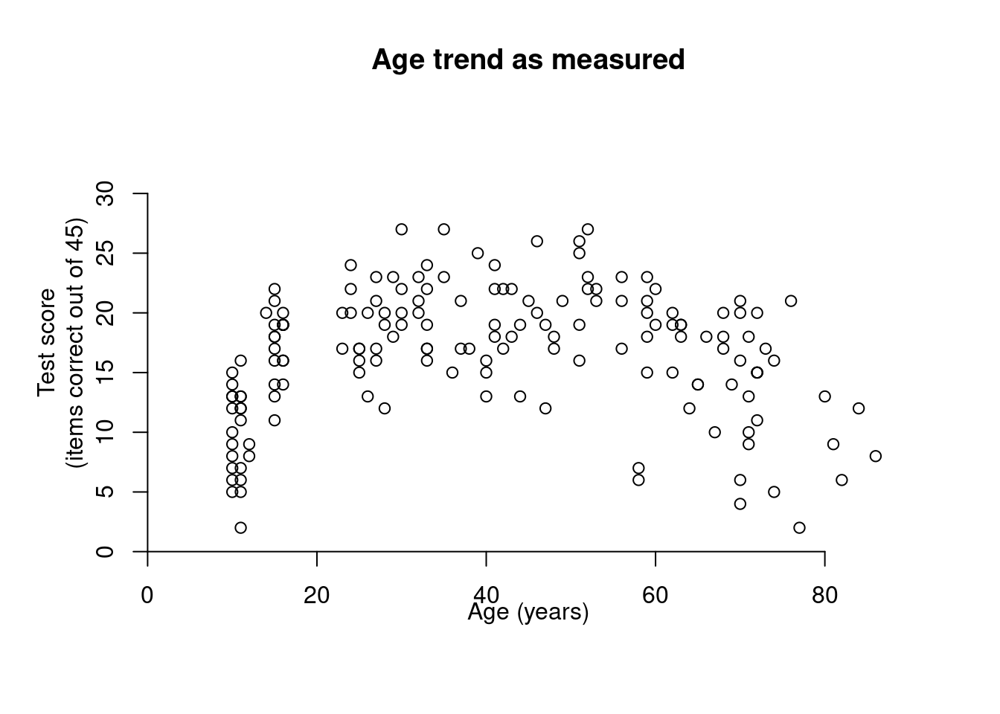
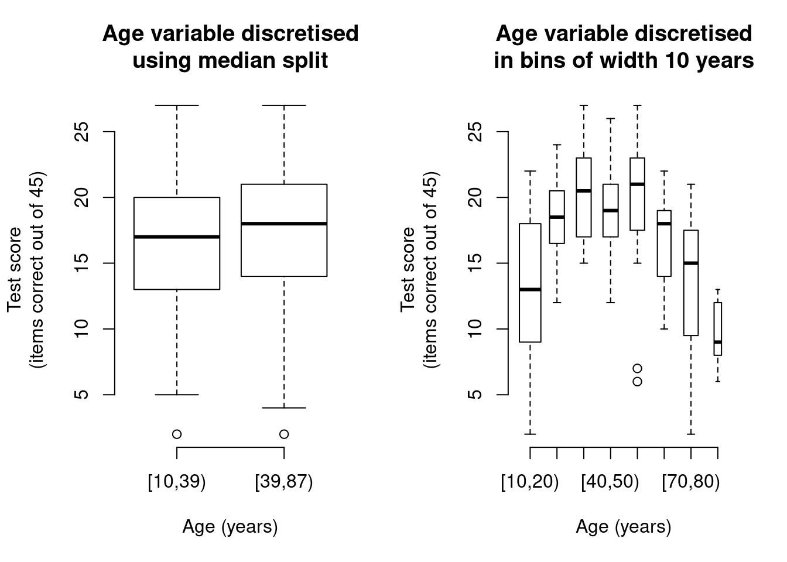
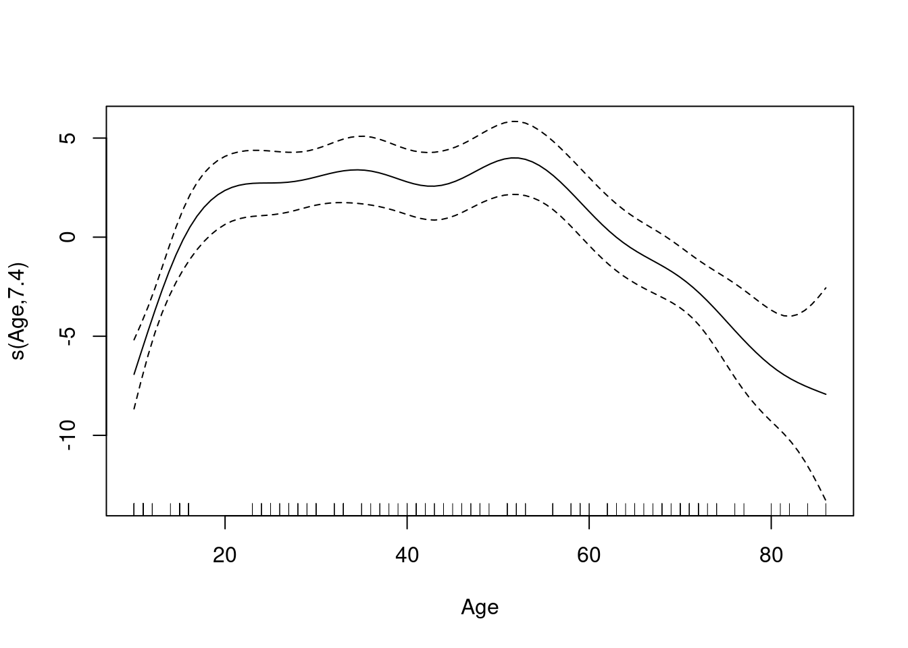
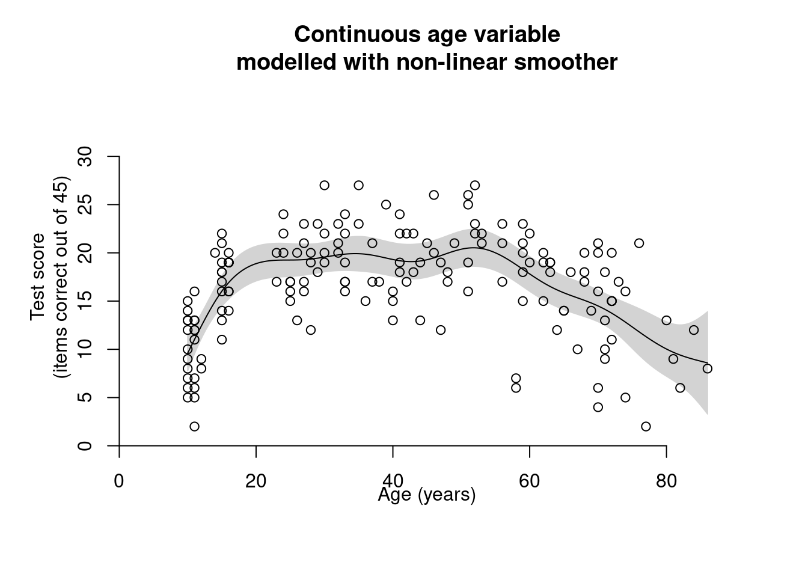

The problem with cutting up continuous variables and what to do when things aren’t linear
power
generalised additive models
non-linearities
R
A common analytical technique is to cut up continuous variables (e.g. age, word frequency, L2 proficiency) into discrete categories and then use them as predictors in a group comparison (e.g. ANOVA). For instance, stimuli used in a lexical decision task are split up into a high-frequency and a low-frequency group, whereas the participants are split up into a young, middle, and old group. Although discretising continuous variables appears to make the analysis easier, this practice has been criticised for years. Below I outline the problems with this approach and present some alternatives.
Problem 1: Loss of information and its consequences
The problem with discretising continuous variables is that it throws away meaningful information. This loss of information is most pronounced in the case of dichotomisation (carving up a continuous variable into two levels). When splitting up words into a high- and a low-frequency group, within-group information about relative frequency differences is lost – extremely frequent words and somewhat frequent words are treated as though they had the same frequency. Doing so leads to an appreciable loss of power, i.e. a decrease in the probability of finding a pattern if there really is one (Altman & Royston 2006; Cohen 1983; MacCullum et al. 2002; Royston, Altman & Sauerbrei 2006): Cohen 1983 shows that carving up a continuous variable into two groups is akin to throwing away a third of the data. Paradoxically, dichotomisation can sometimes lead to a simultaneous increase of false positives, i.e. finding a pattern where there is in fact none (Maxwell & Delaney 1993) – a statistical double whammy.
Problem 2: Spurious threshold effects
Furthermore, discretisation draws categorical boundaries where none exist and may thereby spuriously suggest the presence of cut-offs or threshold effects (e.g. Altman & Royston 2006; Vanhove 2013). For instance, by grouping 20- to 29-year-olds in one category and 30- to 39-year-olds in another, we create the impression that 20- and 29-year-olds tend to be more alike than 29- and 30-year-olds. If the outcome variable differs between the groups, it might even be tempting to conclude that some important change occurred in the 30th year. I suspect – I hope – that the researchers themselves are aware that such a sudden change is entirely due to their arbitrary cut-off choices, but these details tend to get lost in citation, and I wonder to what extent threshold theories in language acquisition owe their existence to continuous predictors being squeezed into the ANOVA straitjacket.
Solutions
When the pattern is more or less linear
With the authors cited above, I agree that the best solution is usually to stop carving up continuous phenomena into discrete categories and to instead exploit the continuous data to the full in a linear regression analysis (see Baayen 2010, and Vanhove 2013 for linguistic examples). Sometimes, however, the data suggest a non-linear trend that is less easily accommodated in a linear regression model. I turn to such cases next.
When the pattern is non-linear
A more sophisticated rationale for carving up a continuous predictor is that the relationship between the predictor and the outcome is not approximately linear. By way of example, Figure 1 shows how the performance on some test varies according to the participants’ age (data from Vanhove & Berthele 2015, available here). What the data mean is of less importance for our present purposes; what is important is that the scatterplot highlights a non-linear trend.
An ordinary correlation analysis or a simple linear regression model would find a small, positive, non-significant age trend. But these analyses test the linear trend in the data, which is clearly not relevant in this case. Dichotomising the age variable by means of a median split does not bring us much closer to a resolution, however: As the boxplots in the left-hand panel of Figure 2 show, a median split completely hides the trend in the data (see also Altman & Royston 2006; MacCullum et al. 2002). A more fine-grained discretisation, e.g., in slices of ten years, underscores the trend appreciably better as shown in the right-hand panel of Figure 2 (see also Gelman & Hill 2007, pp. 66-68). But it also raises a number of questions: What is the optimal number of bins? Where should we draw the cut-offs between the bins? Should every bin be equally as wide? And how much can we fiddle about with these bins without jeopardising our inferential statistics?

Clearly, it is preferable to side-step such arbitrary decisions. Apart from transforming the predictor, the outcome or both, we can deal with non-linearities by modelling them directly. There are a couple of options available in this domain (e.g. LO(W)ESS, polynomial regression, restricted cubic splines); here I’ll briefly demonstrate one of them: generalised additive modelling. It’s not my goal to discuss the ins and outs of generalised additive modelling, but rather to illustrate its use and to direct those interested to more thorough sources. In doing so, I’ll be freely quoting from Section 4.3.2 from my thesis.
Generalised additive models (GAMs) are implemented in the mgcv package for R. GAMs estimate the form of the non-linear relationship from the data. This is essentially accomplished by fitting a kind of regression on subsets of the data and then glueing the different pieces together. The more subset regression are fitted and glued together, the more ‘wiggly’ the overall curve will be. Fitting too many subset regressions results in overwiggly curves that fit disproportionally much noise in the data (‘oversmoothing’). To prevent this, the mgcv package implements a procedure that estimates the number of subset regression – and hence the complexity of the overall curve – that stands the best chance of predicting new data points. For details, I refer to Chapter 3 in Zuur et al. (2009) and to a tutorial by Clark (2013) (Update (2023-08-25): Link broken, but see here instead.) for fairly accessible introductions. An in-depth treatment is provided by Wood (2006).
The following R code reads in the dataset, plots an unpolished version of the scatterplot in Figure 1 above, and loads the mgcv package.
# Read in data
dat <- read.csv("http://homeweb.unifr.ch/VanhoveJ/Pub/Data/participants_163.csv",
encoding = "UTF-8")
# Draw scatterplot of Age vs Spoken (not shown)
# plot(Spoken ~ Age, data = dat)
# Load mgcv package;
# run 'install.packages("mgcv")' if not installed:
library(mgcv)Loading required package: nlmeThis is mgcv 1.9-0. For overview type 'help("mgcv-package")'.The GAM is then fitted using the gam() function, whose interface is similar to that of the lm() function for fitting linear models. The embedded s() function specified that the effect of Age should be fitted non-linearly (s for smoother). Plotting the model shows the non-linear age trend and its 95% confidence band:
mod1 <- gam(Spoken ~ s(Age), data = dat)
plot(mod1)
With the summary() function, numerical details about the model, including approximate inferential statistics, can be displayed. See Clark (2013) (Update (2023-08-25): Link broken.) for details.
summary(mod1)
Family: gaussian
Link function: identity
Formula:
Spoken ~ s(Age)
Parametric coefficients:
Estimate Std. Error t value Pr(>|t|)
(Intercept) 16.5215 0.3196 51.69 <2e-16 ***
---
Signif. codes: 0 '***' 0.001 '**' 0.01 '*' 0.05 '.' 0.1 ' ' 1
Approximate significance of smooth terms:
edf Ref.df F p-value
s(Age) 7.399 8.355 15.14 <2e-16 ***
---
Signif. codes: 0 '***' 0.001 '**' 0.01 '*' 0.05 '.' 0.1 ' ' 1
R-sq.(adj) = 0.429 Deviance explained = 45.5%
GCV = 17.555 Scale est. = 16.65 n = 163All of this is just to give you a flavour of what you can do when you’re confronted with non-linear data than can’t easily be transformed or fitted with a higher-order polynomials. GAMs are flexible in that they can incorporate several predictors, non-linear interactions between continuous variables, and random effects, and they can deal with non-Gaussian outcome variables (e.g. binary data), too.
In conclusion, if you have continuous variables, don’t throw away useful information and treat them as such. If a scatterplot reveals an approximately linear pattern, linear regression is the way to go. If a non-linear pattern emerges, consider fitting a non-linear model.
Warning in polygon(x = c(newdat$Age, rev(newdat$Age)), y = c(predictions$fit + :
"alpha" is not a graphical parameter
Software versions
devtools::session_info()─ Session info ───────────────────────────────────────────────────────────────
setting value
version R version 4.3.1 (2023-06-16)
os Ubuntu 22.04.3 LTS
system x86_64, linux-gnu
ui X11
language en_US
collate en_US.UTF-8
ctype en_US.UTF-8
tz Europe/Zurich
date 2023-08-25
pandoc 3.1.1 @ /usr/lib/rstudio/resources/app/bin/quarto/bin/tools/ (via rmarkdown)
─ Packages ───────────────────────────────────────────────────────────────────
package * version date (UTC) lib source
cachem 1.0.6 2021-08-19 [2] CRAN (R 4.2.0)
callr 3.7.3 2022-11-02 [1] CRAN (R 4.3.1)
cli 3.6.1 2023-03-23 [1] CRAN (R 4.3.0)
crayon 1.5.2 2022-09-29 [1] CRAN (R 4.3.1)
devtools 2.4.5 2022-10-11 [1] CRAN (R 4.3.1)
digest 0.6.29 2021-12-01 [2] CRAN (R 4.2.0)
ellipsis 0.3.2 2021-04-29 [2] CRAN (R 4.2.0)
evaluate 0.15 2022-02-18 [2] CRAN (R 4.2.0)
fastmap 1.1.0 2021-01-25 [2] CRAN (R 4.2.0)
fs 1.5.2 2021-12-08 [2] CRAN (R 4.2.0)
glue 1.6.2 2022-02-24 [2] CRAN (R 4.2.0)
htmltools 0.5.5 2023-03-23 [1] CRAN (R 4.3.0)
htmlwidgets 1.6.2 2023-03-17 [1] CRAN (R 4.3.1)
httpuv 1.6.11 2023-05-11 [1] CRAN (R 4.3.1)
jsonlite 1.8.7 2023-06-29 [1] CRAN (R 4.3.1)
knitr 1.39 2022-04-26 [2] CRAN (R 4.2.0)
later 1.3.1 2023-05-02 [1] CRAN (R 4.3.1)
lattice 0.21-8 2023-04-05 [4] CRAN (R 4.3.0)
lifecycle 1.0.3 2022-10-07 [1] CRAN (R 4.3.0)
magrittr 2.0.3 2022-03-30 [1] CRAN (R 4.3.0)
Matrix 1.6-0 2023-07-08 [4] CRAN (R 4.3.1)
memoise 2.0.1 2021-11-26 [2] CRAN (R 4.2.0)
mgcv * 1.9-0 2023-07-11 [4] CRAN (R 4.3.1)
mime 0.10 2021-02-13 [2] CRAN (R 4.0.2)
miniUI 0.1.1.1 2018-05-18 [1] CRAN (R 4.3.1)
nlme * 3.1-162 2023-01-31 [4] CRAN (R 4.2.2)
pkgbuild 1.4.2 2023-06-26 [1] CRAN (R 4.3.1)
pkgload 1.3.2.1 2023-07-08 [1] CRAN (R 4.3.1)
prettyunits 1.1.1 2020-01-24 [2] CRAN (R 4.2.0)
processx 3.8.2 2023-06-30 [1] CRAN (R 4.3.1)
profvis 0.3.8 2023-05-02 [1] CRAN (R 4.3.1)
promises 1.2.0.1 2021-02-11 [1] CRAN (R 4.3.1)
ps 1.7.5 2023-04-18 [1] CRAN (R 4.3.1)
purrr 1.0.1 2023-01-10 [1] CRAN (R 4.3.0)
R6 2.5.1 2021-08-19 [2] CRAN (R 4.2.0)
Rcpp 1.0.11 2023-07-06 [1] CRAN (R 4.3.1)
remotes 2.4.2 2021-11-30 [2] CRAN (R 4.2.0)
rlang 1.1.1 2023-04-28 [1] CRAN (R 4.3.0)
rmarkdown 2.21 2023-03-26 [1] CRAN (R 4.3.0)
rstudioapi 0.14 2022-08-22 [1] CRAN (R 4.3.0)
sessioninfo 1.2.2 2021-12-06 [2] CRAN (R 4.2.0)
shiny 1.7.4.1 2023-07-06 [1] CRAN (R 4.3.1)
stringi 1.7.12 2023-01-11 [1] CRAN (R 4.3.1)
stringr 1.5.0 2022-12-02 [1] CRAN (R 4.3.0)
urlchecker 1.0.1 2021-11-30 [1] CRAN (R 4.3.1)
usethis 2.2.2 2023-07-06 [1] CRAN (R 4.3.1)
vctrs 0.6.3 2023-06-14 [1] CRAN (R 4.3.0)
xfun 0.39 2023-04-20 [1] CRAN (R 4.3.0)
xtable 1.8-4 2019-04-21 [1] CRAN (R 4.3.1)
yaml 2.3.5 2022-02-21 [2] CRAN (R 4.2.0)
[1] /home/jan/R/x86_64-pc-linux-gnu-library/4.3
[2] /usr/local/lib/R/site-library
[3] /usr/lib/R/site-library
[4] /usr/lib/R/library
──────────────────────────────────────────────────────────────────────────────